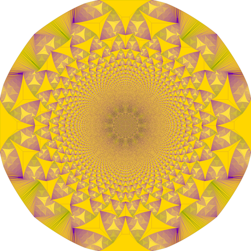

複雑系
書類の山が、ある日1枚足した瞬間に崩れるのと、地震が起きるのと、脳で神経が一斉に発火するのは、同じ形をした現象だ。1987年、3人の物理学者が「なだれ」に数式を与えた。
Per Bak, Chao Tang, Kurt Wiesenfeld が『自己組織化臨界』を Physical Review Letters に発表(7月27日)。砂山モデルが複雑系科学の出発点になった。
同年7月、ダウ平均が初めて2500ドルを突破。誰も3ヵ月後の暴落(ブラックマンデー)を予期していなかった。
デスクに積んだ書類が、ある日、ふと1枚足した瞬間にドサッと崩れる。そんな経験は誰にでもあるはずだ。
崩れる前は、すべてが普通に見えていた。1枚ずつ重ねてきた積み重ねのうち、「どの1枚」が最後の一押しだったかは、あとから辿り直しても特定できない。
書類の山と、地震と、SNSで何かが急に流行ることは、同じ形の現象だ。世界はいつも、崩れる直前で自分を保っている。
この記事では、あなたの手で砂を1粒ずつ落としてもらう。その1粒から始まる小さな「なだれ」が、なぜか地震や森林火災や脳の発火と同じ法則に従うことを、目の前で確かめることになる。
日常の書類の山に話を戻そう。1枚、また1枚と重ねていくうち、ある瞬間に限界を超えて崩れる。奇妙なのは、崩れる直前までは、いたって普通に見えていることだ。最後の1枚が特別重いわけでもない。ただ、そこにあっただけで「全体が」動いた。
さらに奇妙なのは、崩れる規模に規則があることだ。たいていは1〜2枚が滑り落ちる程度の小さな崩れで済むが、ごくたまに山全体が雪崩れる。小さな崩れは頻繁に、大きな崩れはごく稀に——この「頻度と規模のはっきりした反比例」が、実は自然界のあちこちに何度も現れている。
左: 身長のような日常の量は「平均値のまわり」に集まる。右: 地震の規模・火災の面積・株価の変動などは、両対数プロットで直線を描く。「ふつう」が存在しない。
身長や体重は「ベル型の曲線」(釣鐘型とも呼ばれる)に従う。平均値のまわりに集まり、極端に高い人・低い人はごく少数。一方で、地震のマグニチュード、森林火災の焼失面積、株価の日々の変動幅、SNSの拡散規模は、まったく違う分布をしている。マグニチュード8の地震は年1回、7は10回、6は100回——1桁大きくなるごとに頻度が10倍減る。こういう分布を冪乗則冪乗則 Power Law
値が大きくなるほど頻度が急激に下がる、ただし「ゼロ」にはならない分布のこと。ベル型の曲線と違い、極端に大きな値にも、ちらほら出会う。地震やSNSの拡散など、自然界にも人間社会にも多い。と呼ぶ。
ここで不思議な問いが生まれる。なぜ、これほど種類の違う現象が、そろって同じ分布に従うのか。地震のプレートの話と、森林の燃え広がる話と、脳の発火の話は、まったく別のメカニズムのはずだ。それなのに、出てくる統計の「かたち」だけは、ぴったり同じ。
デンマークの理論物理学者。ニールス・ボーア研究所、ブルックヘブン国立研究所、サンタフェ研究所などを渡り歩いた。1987年にチャオ・タン、カート・ワイゼンフェルドと『自己組織化臨界』の論文を発表。複雑系科学の出発点をつくった。1996年、一般向け書籍『How Nature Works』で持論を広く提示した。「自然はなぜ複雑か」という、物理学が素通りしてきた問いに正面から取り組んだ人物。
1987年、バックらはひとつの答えを出した。大規模で、構成要素が多く、緩く押されつづけるシステムは、勝手に「崩れる直前の状態」に自分を組織化する。この状態を彼らは臨界臨界点 Critical Point
状態が激変する境目のこと。たとえば水は 100°C で急に蒸気に、0°C で急に氷になる。そのちょうどの温度で、液体と気体/氷が「どっちつかず」に揺らぐ。システムが臨界にあると、ちょっとした刺激でも大きな反応が起きる可能性を持つ。状態と呼ぶ。そしてこの考え方全体——「系系 system
物理や数理科学で「注目する対象全体をひとかたまりと見たもの」を指す基本語。格子全体、森全体、脳全体、市場全体のように、境界を決めて『これを観察する』と切り出したものが「系」。個々のマスや個々の木ではなく、その総体の振る舞いを見るときに使う。がひとりでに臨界へ収束する」という性質——を、彼らは自己組織化臨界(Self-Organized Criticality、略して SOC)と名付けた。この記事では、以下この略称 SOC を使う。
SOC は、抽象的な概念のままでは誰にも信じてもらえない。バックらは、この性質を目の前で再現する、できるだけ単純な「おもちゃ」を必要とした。彼らがたどり着いたのは、砂山だった。
なぜ砂なのか。緩く押されて、ときどき崩れる——この「書類の山」と同じ構造を、自然界のあちこちから剥ぎ取って、一番シンプルな形に蒸留したのが砂山だからだ。粒を格子状のマスに落としていき、一定数を超えたマスは隣にこぼれる。たったこれだけ。ここから冪乗則が出てくるなら、地震や森林火災や脳のなだれで同じ分布が出る「理由」の説明にもなる——というのが、バックらの賭けだった。このおもちゃのモデルは、3人の名前を取って BTWモデル(Bak-Tang-Wiesenfeld model)と呼ばれる。
BTWモデルのルールは、次の4ステップに集約される。
BTW モデルのルール。空のマスに砂を1粒ずつ落とし、4粒以上になったマスは周囲に配る——たったこれだけのルールを格子状のマスで一斉に適用するだけで、「なだれ」のサイズが冪乗則に従う。
なぜ「4粒」なのか、気になった人もいるかもしれない。これは任意の数字ではなく、格子の形から自動的に決まる数だ。2次元の正方格子では、1つのマスが隣接する相手は上下左右の4つ。BTW の転倒ルールは「隣の数と同じだけ積もったら、1粒ずつ全員に配る」という対応なので、閾値は自然に4になる(三角格子なら6、ハニカム格子なら3、1次元なら2)。専門用語では格子の配位数と呼ばれるこの数字が、そのまま臨界の閾値になっている。
このルールを、コンピュータの中で何千回、何万回と繰り返すと何が起きるか。最初のうちは、落とした砂粒がそのマスに積もるだけで何も起きない。しかし粒数が増えていくと、ぽつぽつと小さな連鎖(なだれ)が始まる。さらに続けると、1粒落としただけで何百ものマスを巻き込む「大なだれ」がごくたまに起きるようになる。
臨界近くの状態に、砂粒を 1 つ落としたときの時間発展。中央のマスが 4 に達すると転倒し、周囲の 3 のマスを次々に 4 へ押し上げる(③)。原因は 1 粒なのに、どこまで連鎖するかは事前に決められない——同じ 1 粒が、1 マスで止まることもあれば、系全体を揺さぶる大なだれを起こすこともある。これが SOC の「入力と応答が比例しない」核心の挙動だ。
そして起きたなだれの大きさを、一つひとつ記録していくと、その分布は冪乗則になる。誰もこの分布を設計していない。ルールは「4粒を超えたら配る」だけで、大規模ななだれを呼ぼうとも、抑えようともしていない。それでもモデルは、勝手にその分布に辿り着く——これが、バックらが見つけた「自己組織化」の正体だ。
大きな地震の前には特別な前兆があるはずだ。巨大な崩壊には、それに見合う大きな引き金がある。
臨界状態にある系では、原因の大きさと結果の大きさに比例関係が無い。砂を1粒落としたら、小さな崩れで終わることもあれば、系全体を巻き込むなだれになることもある。事後にしか区別できない。
複雑な現象が複雑なのは、裏にある仕組みが複雑だからだ。
逆のことが起きている。4つの単純な局所規則だけで、冪乗則・フラクタル・1/f ノイズが勝手に出てくる。見た目の複雑さは、仕組みの複雑さを必要としない。

「臨界」とは、亜臨界(静かすぎ)と超臨界(荒れすぎ)の狭間にある、狭い窓。スライダーを動かして、3つのモードを見比べてみる。冪乗則の直線は、真ん中だけに現れる。
▶ 開始 を押すと、砂山の中央(黄色い点線枠の内側)に砂粒を少しずつランダムに落としていく。下のスライダーは転倒しやすさ(= マスがどれくらいの粒数で崩れるか、物理では結合強度と呼ばれる)を変える:SUB=5粒で転倒(鈍い)/ CRIT=4粒で転倒(砂山モデル本来)/ SUPER=3粒で転倒(敏感すぎ)。下側のグラフは、発生したなだれの大きさ別の頻度を両対数プロットしたもの。点が斜めの直線に並べば冪乗則、つまり臨界状態の目印。右上に ⚡ 冪乗則 バッジが点けば到達確定。
※ 本来 BTW の閾値は 4 粒で固定です(正方格子の配位数=4 から必然的に決まる、記事前半で説明した通り)。この Visualizer ではあえて閾値を人工的にずらした変種を左右に置き、CRIT=4(本物の BTW)を中央として両端と比べることで、「閾値が 4 からズレると SOC が壊れる」ことを体感させるための教育用装置です。SUB/SUPER は実在するモデル分類ではなく、3段階を対比するためのダミー変種だと思ってください。
砂山モデル(BTW 1987)の縮小版 20×20。CRIT は厳密な BTW(閾値4・4隣マスに1粒ずつ分配)、SUB は転倒閾値を 5 に上げて各転倒で 1 粒散逸させた変種(非保存・鈍感)、SUPER は閾値を 3 に下げて 3 マスにだけ分配する確率的変種(過敏)。SUPER は理論的には確率的 SOC モデル(Manna 変種)に近く、異なる冪指数のスケーリングを示す可能性がある——そのため ⚡ 冪乗則 の判定は「傾きが BTW の理想値 −1.2 に近いか」まで要求している。目的は「BTW の閾値 4 はズラせば SOC の『窓』から外れる」という質的事実を体感させることで、現実のモデル分類はもっと細かい。
ここまでが、Per Bak が世界に提示した光景だ。臨界は「どっちつかずの場所」で、そこだけに冪乗則が現れる。そしてモデルは、何もしなくても、勝手にその狭い場所に辿り着き、辿り着いた後はそこに留まり続ける。一度臨界に入った系は、勝手に抜け出したりしない。砂を落とし続ける限り、個々のなだれは起きたり起きなかったりするが、サイズ分布は冪乗則のまま安定する——これが「自己組織化」のもう一つの意味だ。入口も出口も、系が自分で決めている。この性質を、彼らは自己組織化自己組織化 Self-Organization
外からの指示や中央の設計がなくても、システムが勝手にまとまった構造をつくること。群れ・渦・結晶・脳の発達、そして砂山のなだれも同じ仲間。「誰も設計していないのに、そうなる」現象を指す。臨界と名づけた。
ここからは、自分の手で砂山を崩してみてほしい。さっきの Phase Window Visualizer が「3つの体制を見比べる」ための小型版だったのに対し、このシミュレーターは臨界(閾値4)に固定した本物の BTW モデルで、粒数を増やしたときに冪乗則がはっきり現れる現場を見届けるためのものだ。50×50 のマスに BTW ルール(4粒を超えたら隣4方向に配る)を適用するだけ。仕組みは紙芝居と同じで、複雑な追加要素は何も入っていない。
画面の見方はこうだ。「砂山」と書かれた黒い画面は、砂山を真上から覗いた航空写真のようなものだと思ってほしい。1マス1マスが、地上に積み上がった砂の山。マスの色は「そのマスに何粒の砂があるか」を表している——空なら暗く、多いほど明るく、3粒(黄色)が「いつ崩れてもおかしくない」転倒寸前の色だ。
「なだれサイズ分布」と書かれた画面は、起きた「なだれ」のサイズを記録した両対数グラフだ。横軸はなだれの大きさ(巻き込んだマスの数)、縦軸はその大きさが何回起きたかの頻度。どちらも対数目盛で、点の並びが「左上から右下へ降りていく、斜めの直線」になれば冪乗則が成立している証拠になる。水平の直線でも、垂直の直線でもなく、右肩下がりの一本線、という意味だ(大きいなだれほど頻度が下がっていく)。黄色い点があなたの砂山のデータで、チェックボックスを入れると、地震・森林火災・神経雪崩・太陽フレアという実在する現象の冪指数の直線を参考ガイドとして重ねて表示できる。自分の砂山の傾きが、どの分野の線と近い角度になっているかを見比べるためのものだ。
ただし、1点だけ気をつけてほしい。冪乗則の直線は、ある程度の粒数を落とさないと現れない。「1000粒」「10000粒」ボタンを押して、系が臨界に落ち着くまで数秒待つこと。それが「自己組織化」の現場を見届ける、唯一の方法だ。
観察ポイント: (1) 最初は乱雑に粒が積もるが、やがて赤いなだれが走り、左画面に金色(3粒)の線が樹枝状に走るようになる。(2) 右の点(黄色)が「直線状」に並び始めたら、あなたの砂山が臨界に到達したサイン。(3) チェックを入れて、地震や神経雪崩の傾きと、あなたの砂山の傾きがどれくらい近いかを見比べてみる。
Bak, Tang, Wiesenfeld (1987) の砂山モデルをJavaScriptで実装したもの。転倒ルールは原論文の2Dアベリアン版に準拠。端から落ちた砂は散逸として記録から除外。実データ曲線(地震・火災・神経・太陽フレア)は各分野の代表的な冪指数をもとに概念的に重ね書きしたもので、縦軸の絶対位置は比較しやすいよう正規化している。
右のグラフを見てほしい。横軸はなだれの大きさ(巻き込んだマスの数)、縦軸はその大きさがどれくらいの頻度で起きたか——どちらも対数目盛だ。両対数でプロットして直線になる分布、それが冪乗則のサインである。あなたの砂山が描いた直線が、地震・森林火災・神経雪崩・太陽フレアの実データ曲線と、同じ傾きで並んでいるのが見えるはずだ。
これは偶然ではない。1粒ずつ粛々と駆動され、局所的な閾値で雪崩れ、端からエネルギーが逃げていくシステムは——それがコンピュータの中の砂山であれ、プレート境界の岩盤であれ、森林であれ、大脳皮質であれ——同じ統計法則に辿り着く。SOC の最も強い主張はここにある。
通常、臨界点は物理学のなかで「丁寧にパラメータを調整しないと達成できない、幅ゼロの点」だと考えられてきた。水が沸騰する直前のある特別な温度・圧力、磁石が磁性を失う特別な温度——ほんの少しずれたら、もう臨界ではない。ところがSOCでは、系が自動的にその一点に向かって収束する。なぜそんなことが可能なのか。
答えは、システムの「駆動」と「散逸」の時間スケールが極端に離れていることにある。砂山で言えば、1粒を落とすのはゆっくり、雪崩は一瞬——この2つのスピードのギャップが、臨界という狭い場所を「引き寄せるアトラクター」に変える。
砂粒は、前のなだれが完全に収まってから次を落とす。これがBTWモデルの暗黙のルールで、「一度に押さない」という制約が臨界を作る。
日常の例: 書類を1日に1枚ずつ積み重ねていく。1時間に100枚まとめて置いたら、山はすぐに崩れて臨界には辿り着かない。じわじわ押す、という時間のスケール差が重要だ。
駆動が速すぎれば超臨界へ、遅すぎれば亜臨界へ。臨界はその間にある。
転倒ルールは隣のマスしか見ない。系全体を監視する「指揮者」はどこにもいない。各マスが自分の周りだけを見て、勝手にルールを適用する。
日常の例: 地震のすべり面は、局所的な応力が岩石の強度を超えた点でしか動かない。プレート全体を見渡して「ここでそろそろ大地震」と決めている主体はいない。
局所性は、なだれが遠距離まで連鎖する前提条件。大域的な制御があると、連鎖のスケールが制限される。
格子の端に達した砂は、外に落ちて消える。この「逃げ道」がないと、系はどんどん積み上がるばかりで、なだれが統計的に安定した分布にならない。
日常の例: 森林火災では、湖や川や燃え尽きた跡地が散逸の出口になる。すべてが可燃物だったら、いったん火がつけば全てが焼けるだけで、冪乗則の多様な規模の火災は現れない。
駆動が「入ってくる」だけではなく、散逸で「出ていく」バランスが臨界を生む。
①〜③を満たすと、局所的な相互作用しかないのに、系の端と端が統計的に相関しはじめる。1つのマスの転倒が、遠く離れたマスの転倒確率を変える。臨界状態の中核的特徴であり、なだれがあらゆるスケールで起きる理由でもある。
日常の例: ある株式の下落が、別業界の株式を連鎖的に下げる。業種が違うから本来なら無関係のはずだが、臨界にある市場では見えない糸で繋がっている。
この「見えない繋がり」が、大きな崩れを予測不能にする原因になる。
臨界は「1点」ではなく「狭い窓」として現れる。SOC の系は、この窓の内側で長時間過ごす。
SOC そのものは1987年に提唱されたが、冪乗則は、それよりずっと前から地震学者たちに知られていた。赤いドットは SOC の発展史の核になった瞬間、白いドットはそれを可能にした関連研究を示す。
1944
グーテンベルクとリヒター、地震の冪乗則を発見
マグニチュードが1大きくなるごとに、その規模の地震の頻度が約10分の1になる——のちに「Gutenberg-Richter 則」と呼ばれる関係が、カリフォルニアの地震データから抽出された。このときは「なぜそうなるか」は謎のままだった。
1987.07.27
Bak-Tang-Wiesenfeld、砂山モデルを発表
Physical Review Letters に『Self-organized criticality: An explanation of 1/f noise』が掲載。4粒転倒という局所規則だけで、なだれのサイズが冪乗則を描くことを示した。「臨界は、自分で自分を組織化する」というアイデアが初めて名前を得た瞬間。
1996
Bak『How Nature Works』出版
バックが一般読者向けに SOC を広めた書籍。地震・進化・渋滞・経済・戦争——SOC をあらゆる場所に当てはめて語ったため、熱狂的な支持と同時に、強い批判も呼んだ。
2003
Beggs & Plenz、脳の「神経雪崩」を発見
ラット大脳皮質スライスの電気活動が、冪乗則で指数 −3/2 のなだれを示した。SOC が物理の話だけでなく、神経科学でも観測される現象であることが明らかになった。以後、「脳は臨界で動く情報処理装置」という仮説が急速に広がる。
2015
Watkins ら、SOC 25年の論争を総括
『25 Years of Self-organized Criticality』が Space Science Reviews に掲載。「SOC は強力な枠組みだが、バックが主張したほど万能ではない。適用範囲は狭く、冪乗則が出てもSOCとは限らない」——という、ブームの後の冷静な整理がおこなわれた。
砂山モデルは、単なる砂の話ではない。それは「世界はなぜ複雑なのか」という問いへの、ひとつの回答だった。4つの局所規則にだけ従う系が、誰の指示も受けずに、勝手に狭い臨界状態へ向かい、そこであらゆる規模のなだれを起こす。自然界の多様性は、特別な設計や微妙な調整を必要としない。
"Nature is perpetually out of balance, but organized in a poised state — the critical state — where anything can happen within well-defined statistical laws."
「自然は永遠に均衡から外れている。しかし統計法則が明確に支配する『ギリギリの状態』——臨界——に組織化されている。あらゆることがそこで起こりうる。」
— Per Bak『How Nature Works』Copernicus(1996)序章
では、どんな現象に SOC の考え方が適用されるのか。分野ごとに整理すると、冪指数も時間スケールも駆動源もばらばらなのが分かる。同じ枠組みで語れるのに、実体はまったく違う。
※ 表中の ≈ は「およそ / ほぼ等しい」の意味(=の代わりに、厳密な値ではなく近似値であることを表す記号)。冪指数の前の「−」は、グラフの直線が右肩下がり(大きいほど頻度が下がる)という意味。
| 現象 | 冪指数(参考値) | 時間スケール | 駆動源 |
|---|---|---|---|
| 地震(Gutenberg-Richter 則) | ≈ −1.0 | 数年〜数万年 | プレート運動による応力蓄積 |
| 森林火災(Malamud ら 1998) | ≈ −1.3 | 数週間〜数十年 | 植物の成長・乾燥 |
| 神経雪崩(Beggs & Plenz 2003) | ≈ −1.5 | ミリ秒単位 | 外部入力・自発発火 |
| 太陽フレア(Lu & Hamilton 1991) | ≈ −1.5 | 数分〜数日 | 対流運動・磁場再結合 |
| 電力網のカスケード故障 | ≈ −1.4 | 秒〜時間 | 負荷変動・設備劣化 |
この表を見て「まとめて一括りにするには違いすぎる」と感じるなら、それが現代の学界の温度感でもある。SOC は魅力的な枠組みだが、どれも完全に同じメカニズムで動いているわけではない。Frigg(2003)Frigg 2003
科学哲学者 Roman Frigg が書いた論文「SOC — 何であり、何でないか」。SOC がブームになった時期に、「冪乗則が出たら即 SOC」という当時の安易な結論への警告として書かれた。現在の SOC 研究が慎重な温度感を保っている一因。や Watkins ら(2015)が繰り返し警告してきたように、「冪乗則が出たら即 SOC」ではない。しかし共通する直感はある——世界のある領域では、原因の大きさと結果の大きさが比例しない。これだけは、SOC の学問的論争を越えて、受け入れざるを得ない事実である。
この事実は、私たちの直感と正面からぶつかる。私たちは「大きな結果には大きな原因がある」と信じて育つ。株が暴落すれば誰かが引き金を引いたと考え、戦争が始まれば誰かの決断が原因だと考える。しかし臨界の世界では、小さな擾乱が小さな崩れで終わるか、巨大な崩れを呼ぶか、事前の区別はつかない。「最後の書類1枚」は、他の書類1枚と何も変わらない。
ではどうすればいいのか。臨界の世界で唯一できることは、大きなイベントの時期を当てることを諦める代わりに、分布のかたちを把握することだ。マグニチュード9の地震がいつ来るかは分からない。しかし冪乗則から、「100年に1回くらい起きる」という頻度は言える。個別の予測ではなく統計的な見通しに投資する——これは「プレモーテム」(悪いシナリオから逆算して備える)や、システムを臨界から遠ざける臨界から遠ざける Detuning
SOC 系は"ほっとけば臨界に向かう"性質がある。それを意図的にずらす介入が「デチューン」。例: 森林の計画的な小規模間伐(大火を防ぐ)、金融市場のサーキットブレーカー(連鎖暴落を止める)、書類の山に上限を設ける。どれも「大崩れのリスクを下げる代わりに、小崩れを増やす」取引。設計の思想にも繋がる。
それでも、私たちが日々暮らしている世界は、常に"崩れる直前"に自分を保ちつづけている。書類の山だけでなく、脳の発火も、交通の流れも、SNSの話題も。臨界から離れて「安全」にすれば、世界は硬直する。臨界のまま暮らすことは、大きな崩れに備える覚悟と引き換えに、あらゆる規模の反応を可能にする柔軟さを保つ、ということでもある。
砂山の1粒に意味があるかと聞かれたら、答えは「あるともないとも言える」だ。ない、というのは、どの1粒も他の1粒と区別できないから。ある、というのは、その1粒がたまたま最後の一押しになった瞬間、世界を巻き込むなだれの引き金になっていたかもしれないから。私たちの日々の小さな決断も、たぶん、その間のどこかに置かれている。
Self-organized criticality: An explanation of 1/f noise
SOC の原論文。たった4ページだが、複雑系科学のその後30年以上の方向を決めた。有料だが大学図書館経由で読めることが多い。数式は多いが、中心のアイデア(砂山モデルと冪乗則の結合)は、この記事を読んだ後なら辿れる。
How Nature Works: The Science of Self-Organized Criticality
バック本人が SOC を語り下ろした書籍。数式はほとんど使わず、地震・進化・渋滞・経済・戦争まで、あらゆる場所に SOC を当てはめていく。批判も多いが、「自然はなぜ複雑か」という問いを一般読者に突きつけた最初の一冊として、読む価値は失われていない。
Neuronal Avalanches in Neocortical Circuits
大脳皮質の電気活動が SOC のサインを示すことを初めて示した論文。脳が臨界で動く情報処理装置である、という後の大きな流れの起点。オープンアクセス。
25 Years of Self-organized Criticality: Concepts and Controversies
SOC 25年の歴史と、その間に起きた批判・論争をまとめた総説。この記事で採った"冷静な温度感"は、この論文が準拠元。ブームの後の成熟した姿が見える。